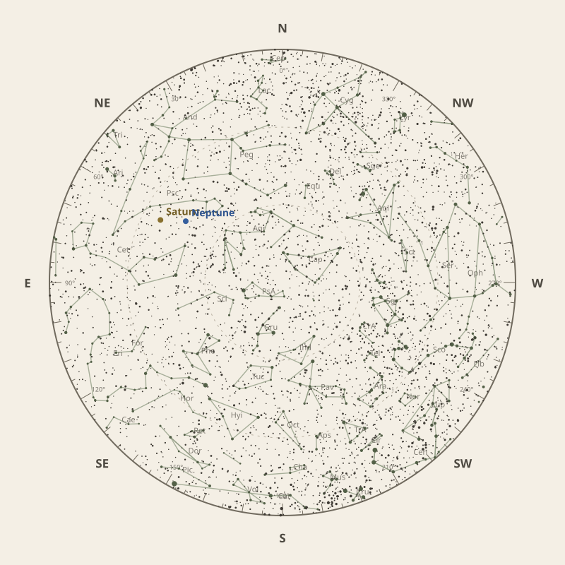

Monthly field almanac
September 2026
Observing reference for South East Queensland, Australia.


The month in one sentence · at a glance
Neptune reaches opposition on 26 Sep 2026 and is highest around 11:30 pm.
- New Moon
- 11 Sep Darkest skies
- Full Moon
- 27 Sep Brightest skies
- Best dark window
- 8 Sep 11h 27m
Conditions now
Is the sky likely to cooperate?
Checking the sky near South East Queensland, Australia…
Find your bearings
The mid-month sky at 10 pm.
Face the matching compass direction and read outward from the centre toward the horizon.

Night planner
Plan the sky for your date.
Choose an observing date to see astronomical darkness, Moon interference, Galactic Centre visibility and the strongest planets.
Best low-Moon dark periods this month
- 6:02 pm–5:29 am11h 27m · 20% Moon
- 6:02 pm–5:28 am11h 26m · 12% Moon
- 6:03 pm–5:27 am11h 24m · 5% Moon
What deserves attention
Top picks for September.
- Milky Way
Milky Way core window
4h 40m with 89° altitude.
- Planets
Neptune
Best monthly date at 63° altitude.
- Planetary events
Neptune opposition
Visible for most of the night.
- Occultations
HIP 5417 lunar occultation
12:42 am to 1:28 am; Moon at 44° altitude for the first listed contact.
- Milky Way
Milky Way core window
5h 40m with 89° altitude.


Moon and darkness
Read the lunar month.
Prefer minimum illumination for faint targets; bright lunar observing belongs near the fullest phase.
Complete lunar data →

Milky Way and deep sky
Recommended core sessions.
- 6:00 pm–12:10 am6h 10m · core to 89°
- 6:01 pm–12:11 am6h 10m · core to 88°
- 6:01 pm–12:01 am6h 00m · core to 88°


Planet visibility
Useful at twilight.
Evening
- Venus1 Sep · 6:00 pm38° · Good
- Mercury25 Sep · 6:00 pm17° · Fair
Overnight
- Neptune29 Sep · 11:30 pm63° · Excellent
- Saturn30 Sep · 12:00 am60° · Excellent
- Uranus30 Sep · 3:30 am41° · Good
Predawn
- Mars16 Sep · 5:30 am30° · Good
- Jupiter30 Sep · 5:00 am21° · Fair
Other opportunities
Events worth noting.
- Neptune oppositionVisible for most of the night.
- HIP 5417 lunar occultation12:42 am to 1:28 am; Moon at 44° altitude for the first listed contact.
- HIP 9449 lunar occultation12:54 am to 2:12 am; Moon at 34° altitude for the first listed contact.


Data and downloads
Need every detail?
2 comet calculations are unavailable; they remain in the data library.
Occultation times use a smooth lunar limb; confirm grazing events with IOTA Occult 4.